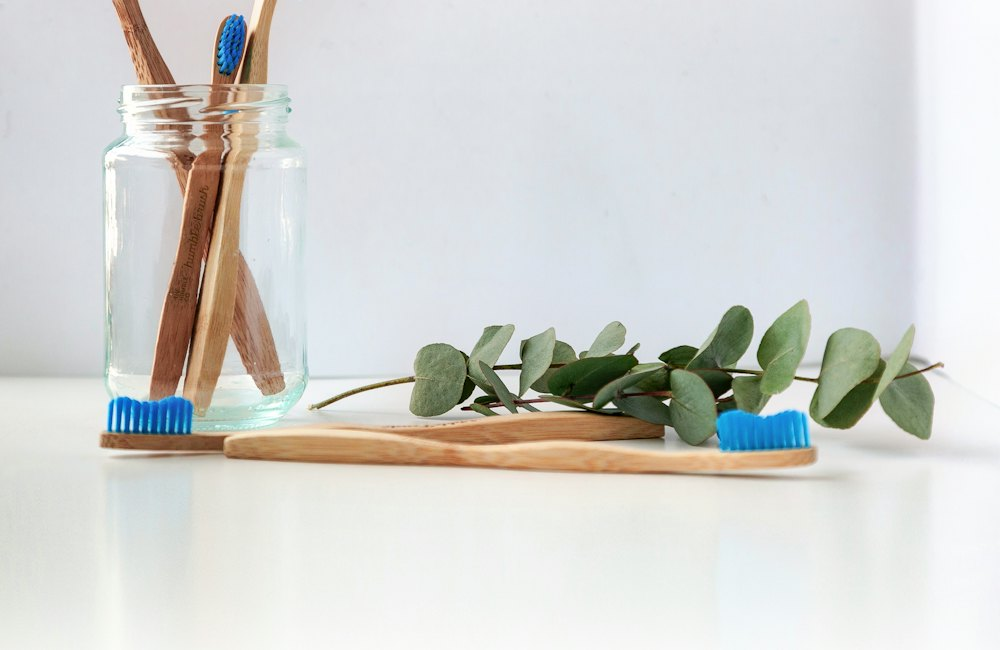

Accueil › Conseils › Poussées dentaires : comment soulager bébé ?
Poussées dentaires : comment soulager bébé ?
Gencives rouges, bave, doigts dans la bouche, nuits agitées… Les dents arrivent. Voici ce qui aide vraiment, et ce qu'il vaut mieux éviter.

Le calendrier des dents
| Âge (environ) | Dents |
|---|---|
| 6 – 10 mois | Les 2 incisives du bas, puis du haut |
| 9 – 16 mois | Les incisives latérales |
| 12 – 18 mois | Les premières molaires |
| 16 – 22 mois | Les canines |
| 2 – 3 ans | Les deuxièmes molaires (20 dents de lait au total) |
Ces âges varient beaucoup : certains bébés naissent avec une dent, d'autres n'en ont aucune à 1 an. Les deux sont normaux.
Les symptômes
Bave abondante, gencives gonflées, besoin de mordiller, irritabilité, sommeil perturbé, joues rouges, fesses un peu irritées. Une poussée dentaire ne donne pas de forte fièvre (au plus une température légèrement élevée) : une fièvre au-dessus de 38,5 °C, une diarrhée importante ou un bébé qui ne boit plus doivent faire consulter.
Ce qui soulage
- Masser la gencive avec un doigt propre.
- Un anneau de dentition passé au réfrigérateur (pas au congélateur : trop dur et trop froid).
- Des câlins et de la patience : les douleurs durent quelques jours par dent.
- Si la douleur est forte : du paracétamol adapté au poids, sur avis de votre médecin ou pharmacien.
Le brossage, dès la première dent
Brossez dès la première dent, deux fois par jour, avec une brosse à dents bébé souple et un dentifrice fluoré à 1 000 ppm : une trace (grain de riz) jusqu'à 3 ans, la taille d'un petit pois ensuite. Premier rendez-vous chez le dentiste conseillé vers 1 an, puis l'examen bucco-dentaire gratuit « M'T dents » à partir de 3 ans.
Le matériel utile
Anneau de dentition réfrigérant
En silicone ou rempli d'eau, à mettre au frigo.
Voir les prix sur AmazonJouet de dentition en silicone
Différentes textures pour masser les gencives.
Voir les prix sur AmazonBrosse à dents bébé
Petite tête, poils très souples, manche qu'on tient bien.
Voir les prix sur AmazonBavoirs bandana
Pour la bave des poussées dentaires, sans changer de body toutes les heures.
Voir les prix sur AmazonLiens affiliés Amazon : une petite commission pour le site, sans surcoût pour vous.